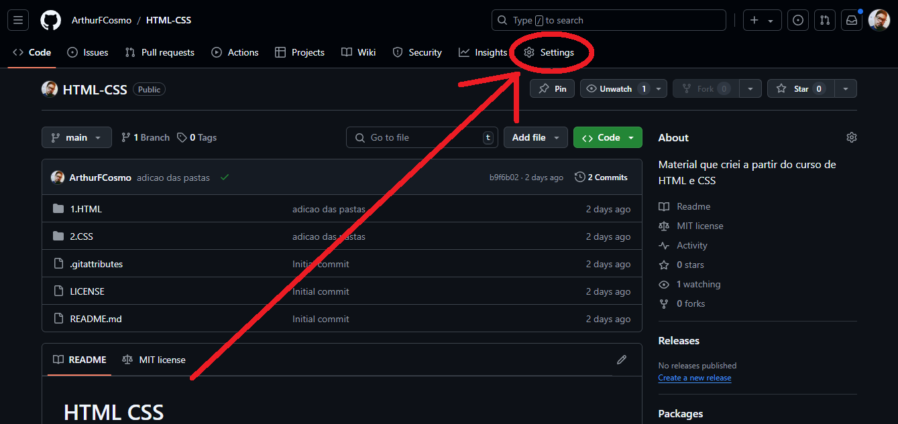
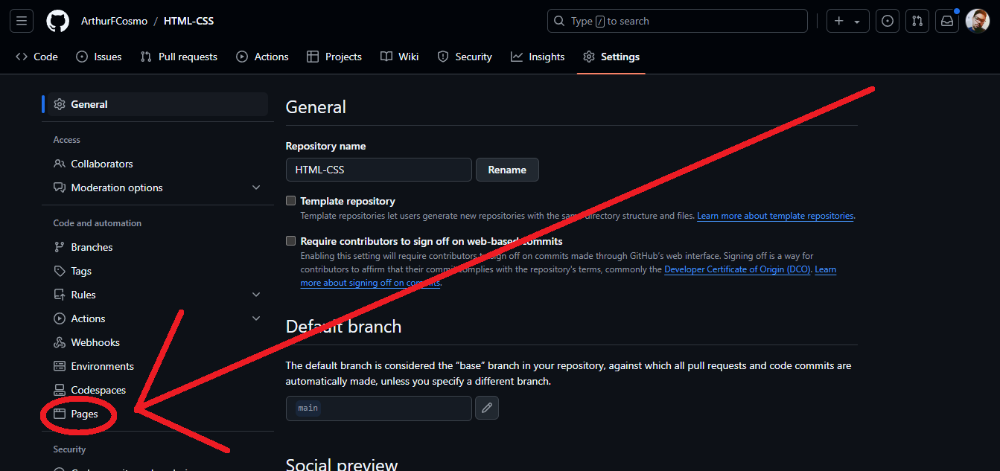
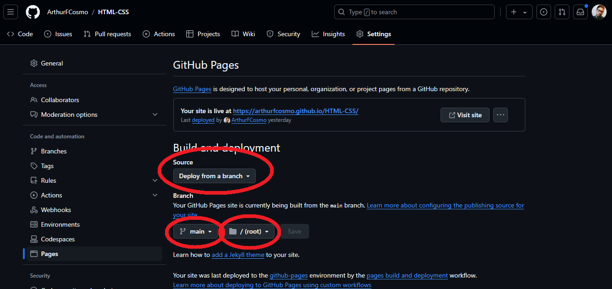

Github Pages
O que é
O Github Pages é uma ferramenta github que serve para você hospedar páginas na internet.
Como funciona
O Github em si funciona com repositórios, nos quais existirão os arquivos do seu site. Todos os repositórios podem ser salvos na nuvem Github. Para você dar o acesso dessa nuvem para outras pessoas, você pode hospedar esse repositório utilizando o Github Pages.
Como utilizar
Inicialmente, deve-se criar um repositório e dar push nos arquivos.
Logo após isso, você deve acessar as configurações desse repositório no site Github.
Na aba settings, você deve clicar na secção "pages".
Na aba pages selecione as segintes configurações:
- Source: deploy from a branch
- Branch: selecione a branch que você quer que seja exibida no site
- Root
Em seguida, aperte f5 para atualizar.
Agora seu site está hospedado, e o domínio está na tela como um link.